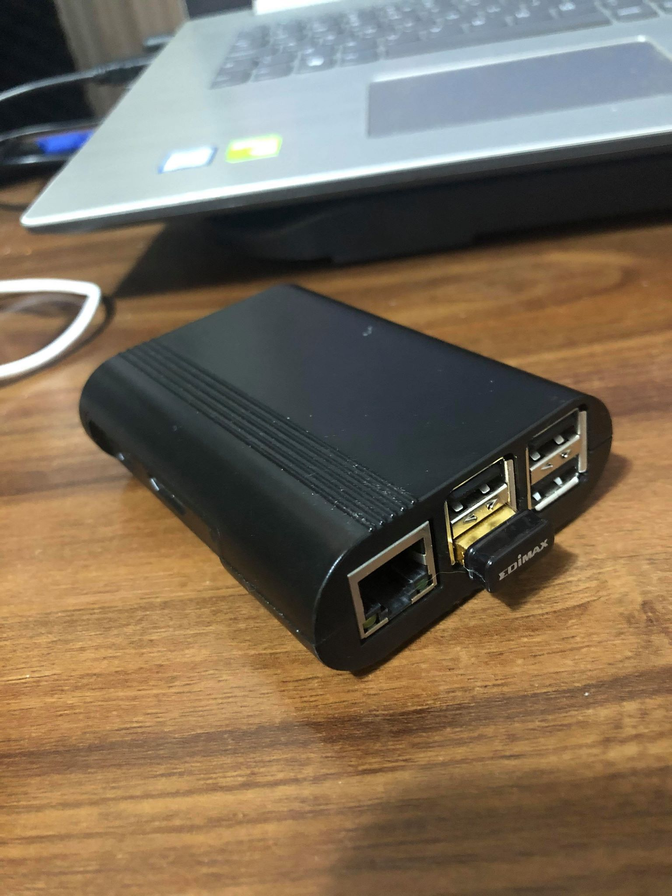

The twitter bot is running on a Raspberry Pi and it is used in order to tweet the weather in Cluj-Napoca, as well as the temperature and how it feels like.
Pre-requisite components
1. RaspBerry Pi
2. Memory card
3. WiFi Stick

Setup and Build
1. Configure Raspian on the Raspberry Pi.
2. Run the latest package updates and upgrades, install twython & requests.
3. Create an app on Twitter Dev API free service and get all API/ACCESS Keys.
4. Generate a key on OpenWeatherMap free weather services.
5. Create a bot that will connect through the APIs, parse and format data, display the formatted data and tweet it.